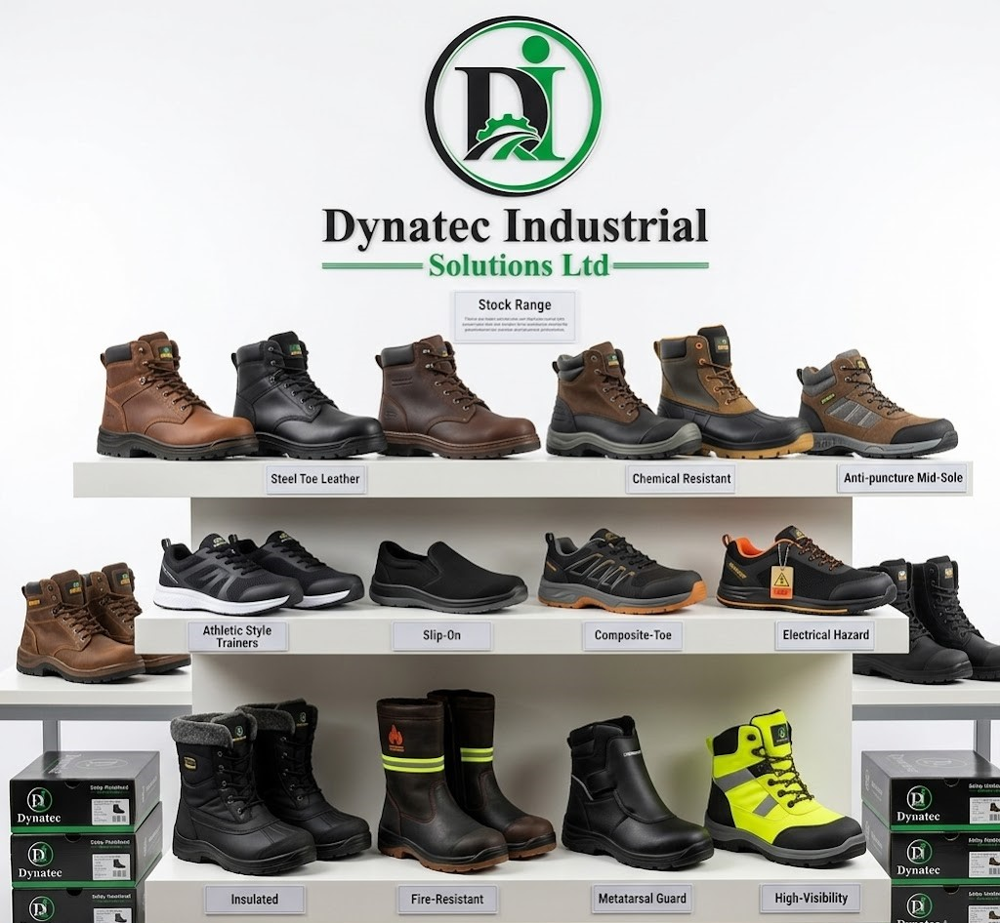

Safety Guide
How to Choose the Right Safety Boots for Industrial Work
Learn how to balance durability, comfort and compliance when sourcing safety boots for your workforce. This guide helps you choose footwear that protects workers on Kenya’s industrial sites.
Audience
Site managers
Topic
Footwear selection
Region
Kenya

Safety Boot Selection Checklist
Understand the Hazards
Start by identifying the risks workers face on the job. Common hazards include impact, compression, slips, sharp objects, chemicals and electrical exposure. The right boot should match the primary hazards in your industrial environment.
Choose the Right Protective Features
Look for boots with the appropriate safety ratings, such as steel toe, composite toe or alloy toe for impact protection. Consider slip-resistant soles, puncture-resistant midsoles and chemical-resistant materials when needed.
Prioritise Comfort and Fit
Workers who wear boots all day need cushioning, arch support and a proper fit. A lightweight design with breathable lining reduces fatigue, while padded collars and insoles improve comfort for long shifts.
Check Compliance and Certifications
Ensure the boots meet relevant industry standards and local regulations. Certified safety footwear helps protect workers and demonstrates that your sourcing decisions support workplace safety requirements.
Evaluate Durability and Maintenance
Choose boots made from durable materials like leather or reinforced synthetics. Easy-care designs with replaceable insoles and resistant stitching will extend service life and cut long-term costs.
Safety Boot Tip
Match footwear to both the work risk and the local climate, and make sure every worker has a proper fit to avoid blisters and fatigue.